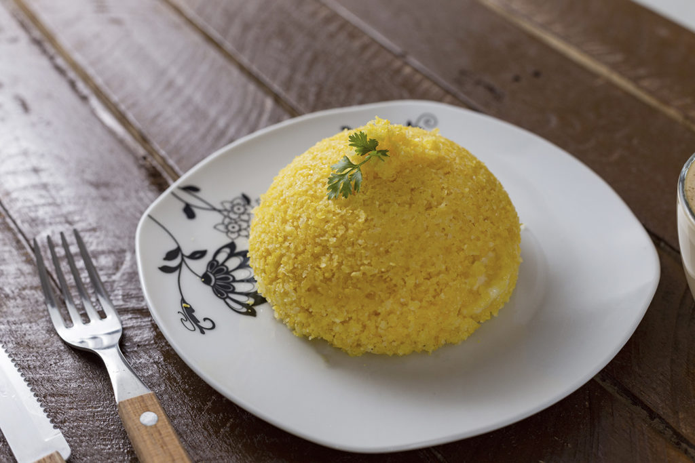

Início
Bem-vindo ao portal do Cuscuz de Milho! Aqui você vai aprender a preparar essa deliciosa iguaria típica do Nordeste, diretamente Piauí, e ainda conhecer sua história e tradição.
Cuscuz de Milho
Ingredientes
- 300 g de farinha de milho
- 1/2 colher (chá) de sal água
- 1 copo (americano) de água manteiga
- 2 colheres (sopa) de manteiga
Modo de Preparo
- Misture farinha de milho e sal.
- Adicione água aos poucos, sempre mexendo com uma colher para distribuir bem o líquido, e deixe hidratar por 10 minutos.
- Preencha o fundo de uma cuscuzeira com água e coloque o cesto de vapor.
- Bote a farinha de milho já hidratada no cesto, tomando cuidado para não compactar. Cozinhe em fogo alto.
- Quando sair um leve vapor pela lateral da tampa, baixe o fogo e deixe cozinhar por mais 10 minutos até o cuscuz ficar bem macio.
- Desenforme o cuscuz, transfira para uma tigela e desfaça em pedaços com um garfo.
- Em uma tigela, misture a manteiga com um pouco da água fervente da cuscuzeira.
- Mexa com uma colher até derreter pelo menos a metade da manteiga.
- Regue o cuscuz com a mistura de água e manteiga, misture com o garfo e sirva.
Dicas
- Prefira a macaxeira bem firme e sem manchas. Cozinhe até ficar macia, mas não deixe desmanchar, para que os bolinhos mantenham a forma ao fritar.
- Desfie a carne de sol e refogue com cebola, alho e cheiro-verde. Se estiver muito salgada, dessalgue antes de cozinhar. Um recheio bem temperado faz toda a diferença no sabor.
- Aqueça o óleo ou a manteiga de garrafa em fogo médio. Frite os bolinhos até dourarem por igual, sem queimar por fora e ficarem crus por dentro. Escorra em papel-toalha para manter crocância e sabor.
História
O cuscuz-de-milho é uma tradição nordestina com raízes profundas no sertão, transmitida de geração em geração. Feito com milho triturado ou flocos de milho hidratados no vapor, pode ser servido simples, com manteiga, queijo ou acompanhamentos salgados e doces, sendo apreciado no café da manhã, almoço ou festas familiares. Surgiu como uma adaptação indígena ao uso do milho, incorporando influências trazidas pelos colonizadores portugueses, e tornou-se um símbolo de sabor, aconchego e da cultura nordestina.